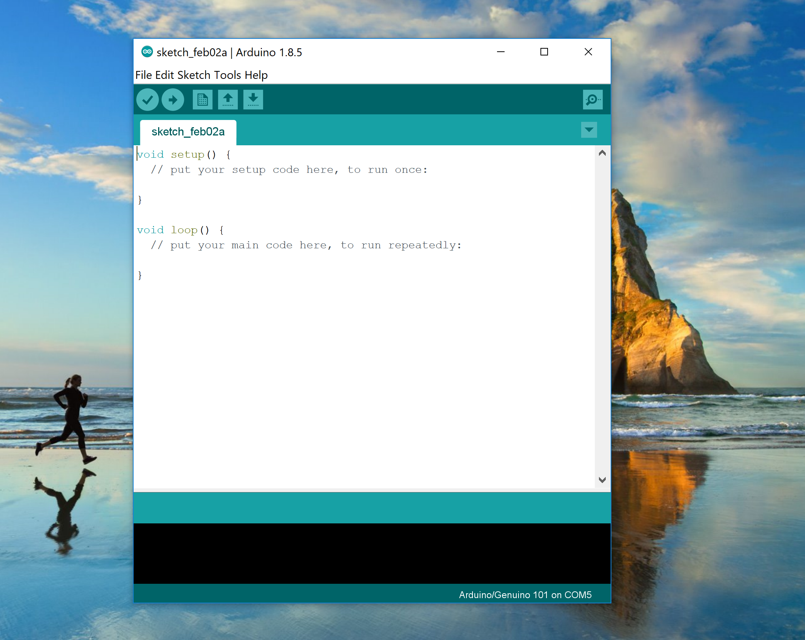
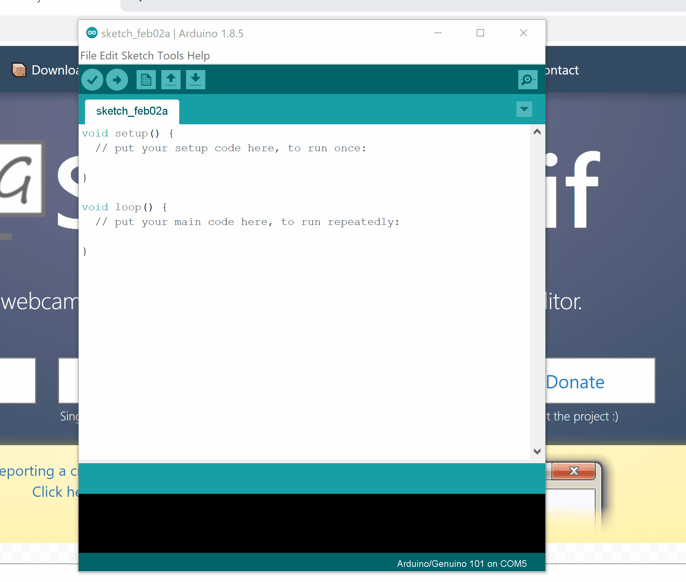
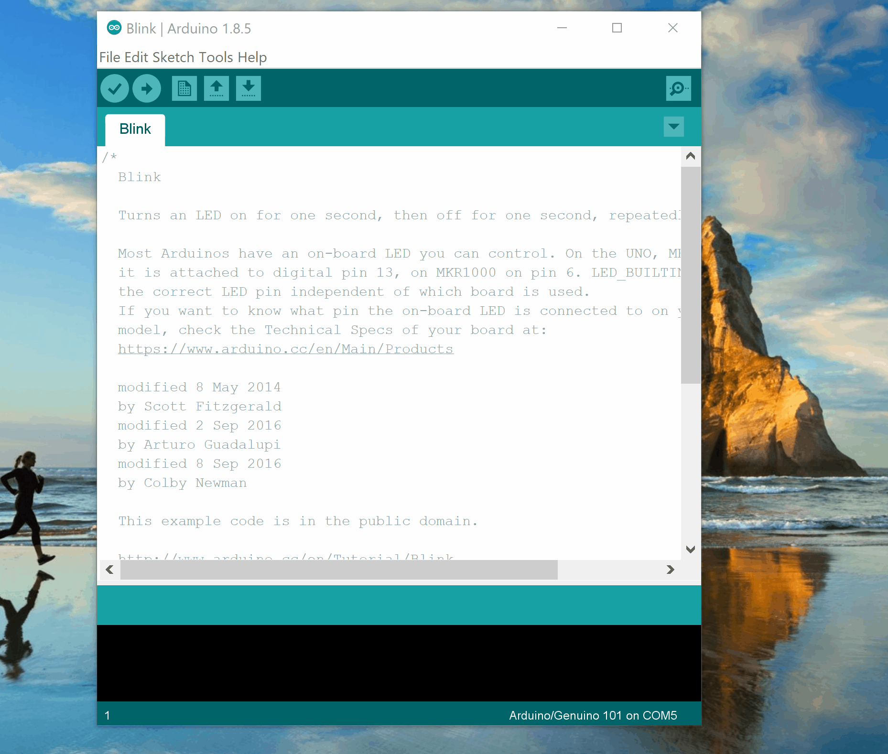
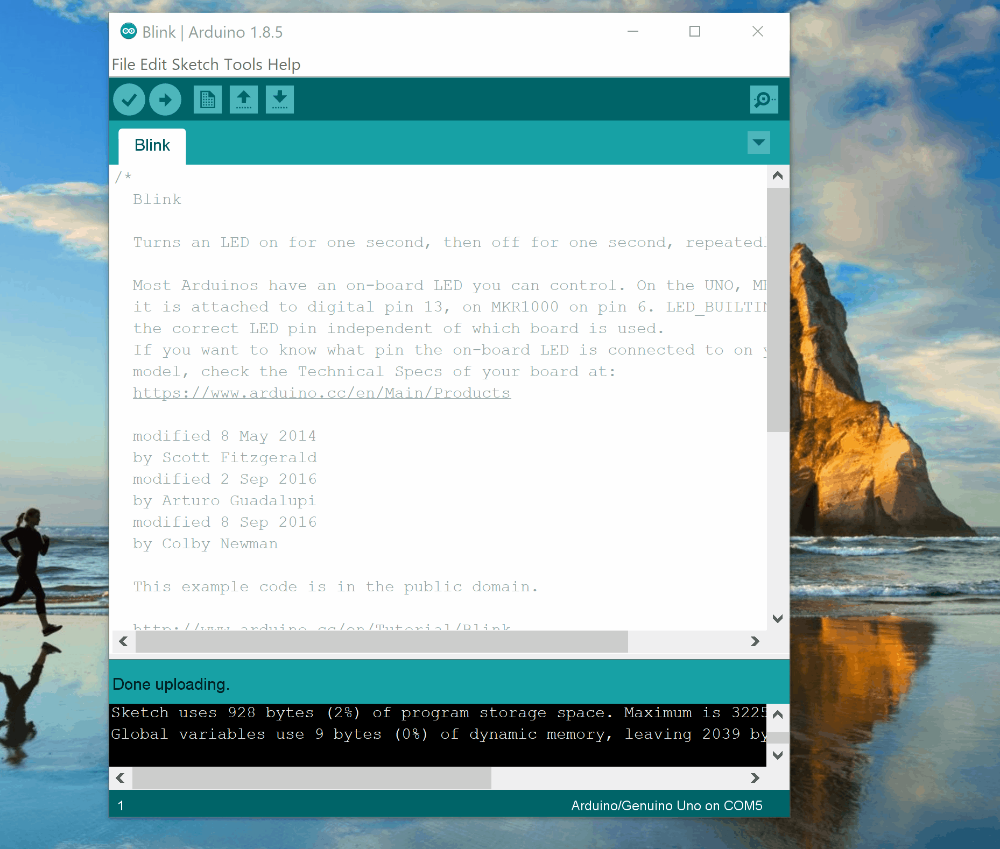
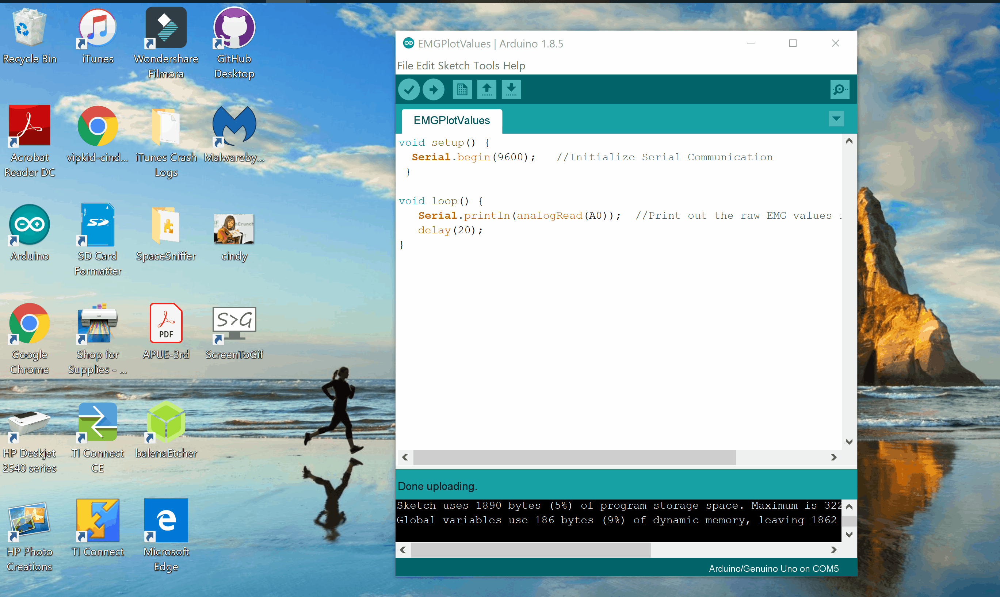

actiVity 2:Arduino/eMG
electromyography
in this activity we will learn a little about eMG, or electromyography which is used to monitor the electrical activity in your muscles using electrodes. Muscles are controlled by motor neurons which cause the signals that the eMG method detects.

naturally this method is used when diagnosing disorders with muscles and nerves that display symptoms like numbness or tingling. types of eMG include:
surface eMG: this detects signals from the surface via electrodes that are stuck to your skin. We will be using this type of eMG
intramuscular eMG: this detects signals using needle(s) inserted into the muscle.
Filtering
As you can imagine, the signals that eMGs work with are incredibly small, and as a result they are susceptible to a great deal of noise, or error. in order to reduce some of the error in our signals, we will filter our signal. the first set of filters that we will deal with filter out noises based on frequency.
High pass: passes frequencies above some cutoff frequency
Low pass: passes frequencies below some cutoff frequency
boxcar: this filter is a combination of the low pass filter above and some smoothing, or averaging to make the signal less erratic. Visually it looks something like the following :

MAteRiAls

Arduino uno Microcontroller
this piece of hardware does a portion of the filtering, and passes information to the Arduino microcontroller

electrodes
this piece of hardware does a portion of the filtering, and passes information to the Arduino microcontroller

electrode pads
this piece of hardware does a portion of the filtering, and passes information to the Arduino microcontroller

olimex eMG shield
this piece of hardware does a portion of the filtering, and passes information to the Arduino microcontroller
instRuctions
test connection to Arduino
1) connect the arduino to the cable, and plug into the usb port on the computer
2) click on the start button and open a program titled Arduino, which should open a screen that looks like the following
3) open the blink sample script
4) select the port where the Arduino is connected
5) upload the script to the Arduino
6) Make sure that the led on the arduino is blinking
Gather eMG data
1) place the shield on top of the arduino
2) click here to download the scripts. unzip the file.
3) open the script eMGplotValues.ino and upload the script to your arduino
4) open the serial plotter to see the scrolling plot of the eMG. this is garbage data because you haven't connected it to your arm yet
5) Attach the electrode pads to one team members' arm. put one on the elbow. And two across a muscle. you can choose your forearm or biceps
6) Attach the black electrode to the elbow pad, and the red and white on the other two, the order doesn't matter, because it is a differential measurement
7) now you can try flexing, and you should be able to see a higher amplitude. note : relax your arm till the signal is close to flat before flexing. keep the three wires separated to prevent noise. As you can see if you move the wires around it will distort the signal. biological signals are so small, that moving the wire is enough noise to overwhelm it

8) close the serial plotter
filter the data
1) upload eMGsenddata.ino to the arduino
2) type the words python into the search bar and open idle.